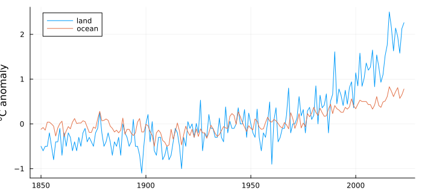
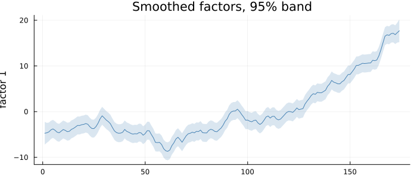
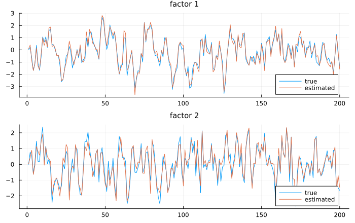
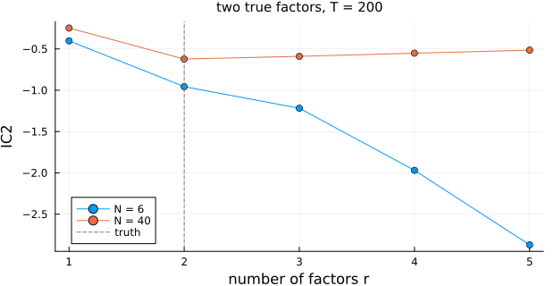
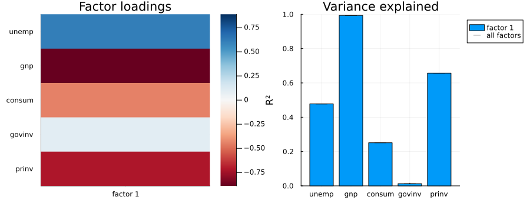

Many Series, Few Forces
using TSAnalytics, Plots, Statistics, LinearAlgebra, Random, Dates
L = dataset("gtemp_land"); O = dataset("gtemp_ocean")
yrs = Dates.year.(L.date)
println("land and ocean temperature anomalies, ", first(yrs), "-", last(yrs),
": correlation ", round(cor(L.value, O.value), digits = 3))land and ocean temperature anomalies, 1850-2023: correlation 0.838plot(yrs, [L.value O.value]; label = ["land" "ocean"], size = (700, 320),
ylabel = "°C anomaly", legend = :topleft)
Two measurements of one planet. Land temperatures swing more than ocean ones, but the two climb together, and a correlation above 0.8 says most of what either does the other does too. Part X modelled series that move together by letting each depend on the others' past. This chapter takes the opposite view: the series move together because they are all driven by something else — a small number of unobserved common factors — and each adds a part of its own.
The model
\[y_t = \Lambda f_t + \varepsilon_t, \qquad f_t = A f_{t-1} + \eta_t, \qquad \eta_t \sim N(0, I), \quad \varepsilon_t \sim N(0, H),\ H \text{ diagonal}\]
N series, r < N factors. The loadings Λ say how each series responds to each factor; the factors follow a VAR; the diagonal H says the series' own parts are unrelated to each other, so that all comovement runs through the factors. It is a state-space model — the factors are the state — and Hamilton (1994, §13.1, printed p. 376, PDF 391) writes it down as one, as Stock and Watson's (1991) unobserved index of coincident economic indicators.
Two things it is not. It is not the static factor model of Tsay's Chapter 9, whose factors are serially uncorrelated by assumption (2010, printed p. 469, PDF 496) — the "dynamic" is the VAR. And it is not a VAR in N series: N series with r factors need N r + r² + N parameters rather than a VAR's N² per lag, which is why factor models are what people fit to a hundred indicators at once.
In the state-space form of Chapter 33, Λ is Z, the factor VAR is T, and H is the observation variance — the names fit_dfm builds. Shumway & Stoffer's Examples 6.2 and 6.7 fit the two-series version of this model to global temperature with a design matrix they call A; Hamilton's A is the coefficient matrix on exogenous variables. Same model.
One factor behind two temperatures
Z = standardize(hcat(L.value, O.value))
m = fit_dfm((land = Z[:, 1], ocean = Z[:, 2]), 1)
println("factor persistence A = ", round(m.A[1][1], digits = 4))
println("share explained, land and ocean: ", round.(series_r2(m), digits = 3))factor persistence A = 0.9956
share explained, land and ocean: [0.84, 0.86]plot(factor_paths(m); size = (700, 300))
One factor with a persistence of 0.996 — very nearly a random walk — and it explains about 85% of each series: the common factor is the warming trend, and what remains is each record's own year-to-year noise. With the factor variance fixed at one per year, its band is the uncertainty about the common signal given both records, narrowest where both are measured best.
Identification
The loadings are not unique. For any orthogonal G,
\[\Lambda f_t = (\Lambda G)(G' f_t)\]
and the rotated factors have the same VAR structure and the same likelihood. With one factor the only freedom is the sign; with r factors it is the whole rotation group. Something has to be fixed by convention, and the references choose differently: statsmodels fixes the factor variance Q = I and nothing else, so its optimiser stops wherever in the rotation it happens to; R's dfms fixes nothing. fit_dfm fixes Q = I and makes the leading r × r block of Λ lower-triangular with a positive diagonal, which leaves exactly one solution.
The cleanest test of an identification is to know the answer. Simulate two factors driving eight series, fit, and rotate the estimate onto the truth by Procrustes:
rng = MersenneTwister(54)
T, N = 200, 8
Λ = [1.0 0.0; 0.6 0.8; 0.9 -0.3; 0.2 0.9; -0.7 0.5; 0.5 0.5; 0.8 0.1; -0.4 -0.6]
A = [0.7 0.1; -0.1 0.5]
f = zeros(T, 2)
for t in 2:T
f[t, :] = A * f[t - 1, :] + randn(rng, 2)
end
Ysim = f * Λ' .+ 0.5 .* randn(rng, T, N)
ms = fit_dfm(Ysim, 2)
S = svd(ms.Lambda' * Λ); R = S.U * S.Vt
println("rotation onto the truth: ", round.(R, digits = 3))
println("largest loading error after it: ", round(maximum(abs, ms.Lambda * R .- Λ), digits = 3))
println("correlation of estimated and true factors: ",
round.([cor((ms.factors * R)[:, j], f[:, j]) for j in 1:2], digits = 3))rotation onto the truth: [1.0 0.023; -0.023 1.0]
largest loading error after it: 0.101
correlation of estimated and true factors: [0.977, 0.95]fr = ms.factors * R
plot(plot(1:T, [f[:, 1] fr[:, 1]]; label = ["true" "estimated"], title = "factor 1"),
plot(1:T, [f[:, 2] fr[:, 2]]; label = ["true" "estimated"], title = "factor 2");
layout = (2, 1), size = (700, 440), titlefontsize = 10)
The rotation that best aligns the estimate with the truth is within two degrees of the identity — because the simulated Λ was itself chosen lower-triangular in its first two rows, the convention fit_dfm imposes. Loadings come back to within about 0.1, and the factors with correlations of 0.95 and above. Had the truth been some other rotation, the estimate would have been the same model in the package's rotation, and rotate_factors would carry it to any other without changing the likelihood.
How many factors?
Bai & Ng (2002) proposed information criteria for r built from principal components, consistent as both N and T grow. "Both" is doing the work:
function simulate_two_factors(N, T, rng)
Lm = randn(rng, N, 2)
F = zeros(T, 2)
for t in 2:T
F[t, :] = 0.6 .* F[t - 1, :] .+ randn(rng, 2)
end
return F * Lm' .+ randn(rng, T, N)
end
ics = [bai_ng_ic(standardize(simulate_two_factors(NN, 200, rng)), 5) for NN in (6, 40)]
for (NN, ic) in zip((6, 40), ics)
println("N = ", lpad(NN, 2), ": IC1, IC2, IC3 choose r = ", argmin(ic.IC1), ", ", argmin(ic.IC2), ", ", argmin(ic.IC3), " (truth: 2)")
endN = 6: IC1, IC2, IC3 choose r = 5, 5, 5 (truth: 2)
N = 40: IC1, IC2, IC3 choose r = 2, 2, 2 (truth: 2)plot(1:5, [ics[1].IC2 ics[2].IC2]; marker = :circle, label = ["N = 6" "N = 40"],
xlabel = "number of factors r", ylabel = "IC2", size = (620, 320),
title = "two true factors, T = 200", titlefontsize = 10)
vline!([2]; color = :gray, linestyle = :dash, label = "truth")
With forty series the criterion turns up at the true two; with six it keeps falling to the largest value allowed. The penalty is calibrated for large panels, and six series is not one. For a handful of series the honest guide is the loadings — a factor that loads on one series alone is that series' own variation relabelled, as Manual: Dynamic Factor Models shows on econ5.
A business-cycle factor
Five quarterly US series from econ5, in changes, standardised:
e = dataset("econ5")
g(x) = 100 .* diff(log.(x))
Ze = standardize(hcat(diff(e.unemp), g(e.gnp), g(e.consum), g(e.govinv), g(e.prinv)))
me = fit_dfm((unemp = Ze[:, 1], gnp = Ze[:, 2], consum = Ze[:, 3], govinv = Ze[:, 4], prinv = Ze[:, 5]), 1)
plot(plot(loadings_plot(me)), plot(factor_r2_plot(me)); size = (900, 340))
Unemployment loads positively (the identification makes the first series' loading positive), output and private investment negatively: the factor is a recession index. Government investment hardly loads at all, and the R² chart says why — its quarterly movements are budget decisions, not the cycle.
A ragged edge
Data arrive at different times: the latest quarter of one series is out while another's is not. Missing values are NaNs, and the filter simply processes whichever series are observed each period:
Zr = copy(Ze)
Zr[(end - 3):end, [2, 5]] .= NaN # last year of GNP and private investment not yet published
mr = fit_dfm((unemp = Zr[:, 1], gnp = Zr[:, 2], consum = Zr[:, 3], govinv = Zr[:, 4], prinv = Zr[:, 5]), 1)
println("final four quarters, factor from all data: ", round.(me.factors[(end - 3):end, 1], digits = 2))
println("final four quarters, factor from the rest: ", round.(mr.factors[(end - 3):end, 1], digits = 2))
println("their standard errors, all data / the rest: ",
round.(me.factors_se[(end - 3):end, 1], digits = 2), " / ", round.(mr.factors_se[(end - 3):end, 1], digits = 2))final four quarters, factor from all data: [-0.49, -0.76, -0.18, -0.13]
final four quarters, factor from the rest: [-0.47, 0.15, -0.54, -0.53]
their standard errors, all data / the rest: [0.22, 0.22, 0.22, 0.22] / [0.69, 0.71, 0.71, 0.72]The factor is still estimated at the ragged edge, from unemployment, consumption and government investment, with a standard error about three times as large — the price of losing the two series that load on it most. This is the core of nowcasting: reading the current state of the economy from whatever has been published so far.
The same data and the same number of factors give three different sets of loadings from statsmodels, R's dfms and this package, and all three can be right: they differ by a rotation. On a six-series fixture the rotation from this package's loadings to statsmodels' is a reflection (determinant −1), which no amount of re-running would reveal as the same answer. Compare factor models by their likelihoods and by series_r2, which are rotation-invariant, never by loadings alone. Here, twenty random starts reach the same loadings to 1e-8 with one parameter fewer than statsmodels and a likelihood 2.3e-6 higher.
The filter never forms an N × N matrix. Each period's observations are absorbed one series at a time — a sequence of scalar updates, the univariate treatment of multivariate series of Durbin & Koopman (2001) — which is why a missing value costs nothing and a hundred series cost a hundred cheap updates rather than one large inversion. None of the six textbooks this project checks against describes it: Hamilton and Shumway & Stoffer both invert the full innovation covariance. The factor VAR is kept stationary during the search by the Ansley & Kohn (1986) map, which takes any real vector to a stationary VAR and back.
Summary
- A dynamic factor model explains
Nseries byrcommon factors that follow a VAR, plus unrelated idiosyncratic parts. - The loadings are identified only up to rotation; the package fixes one, and simulation recovers a known model in it.
- Selecting
rby information criteria needs many series; with few, read the loadings. - The filter's one-series-at-a-time form handles missing data, including the ragged edge of real-time data.
See also
- Manual: Dynamic Factor Models
- Chapter 46 — the VAR the factors follow
- Chapter 55 — another hidden state, this time discrete